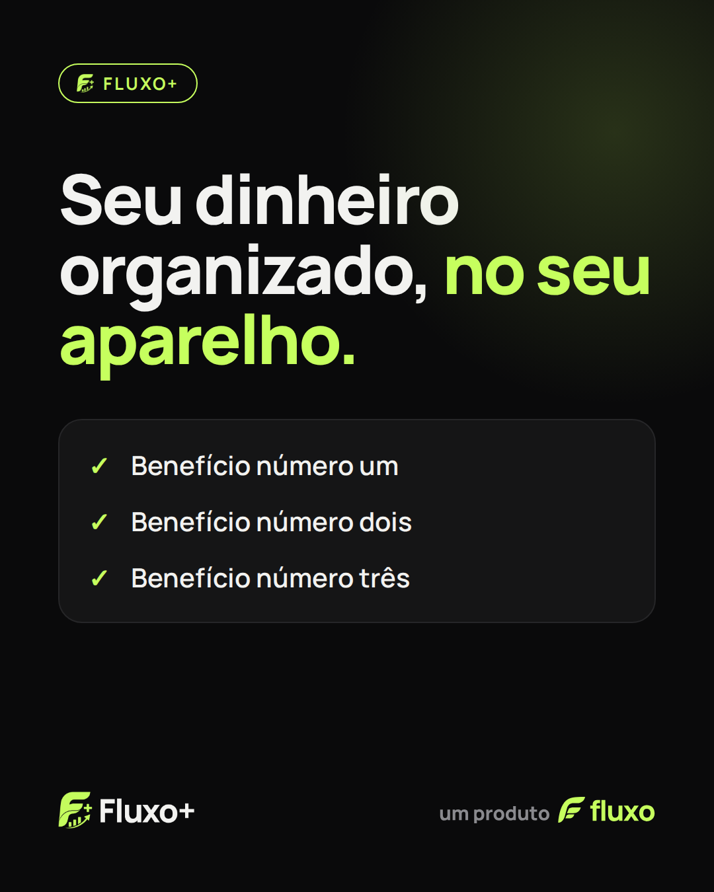
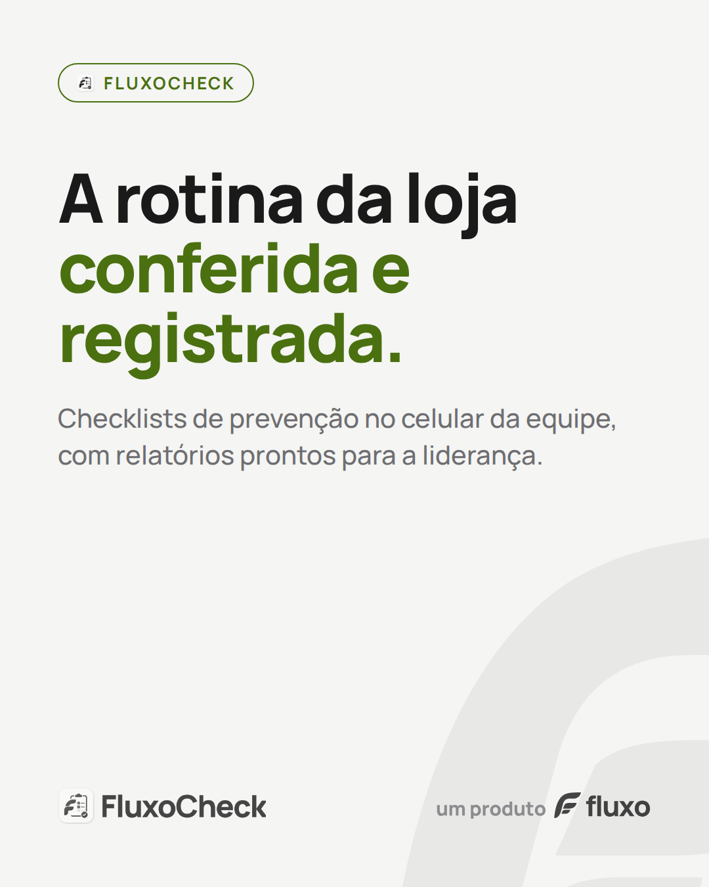
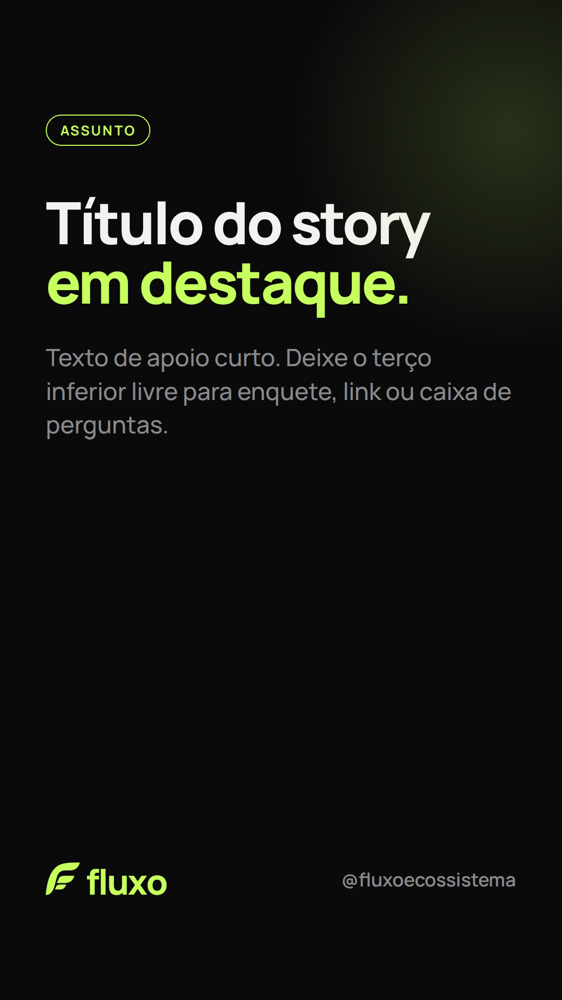
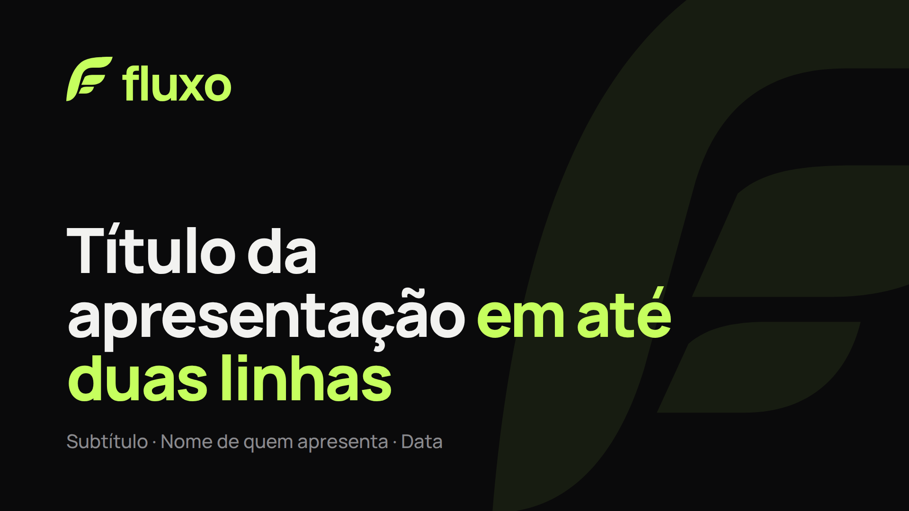
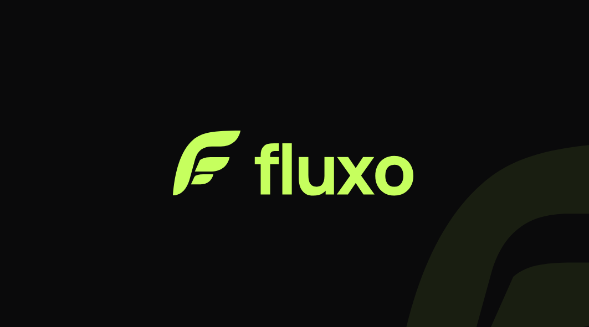
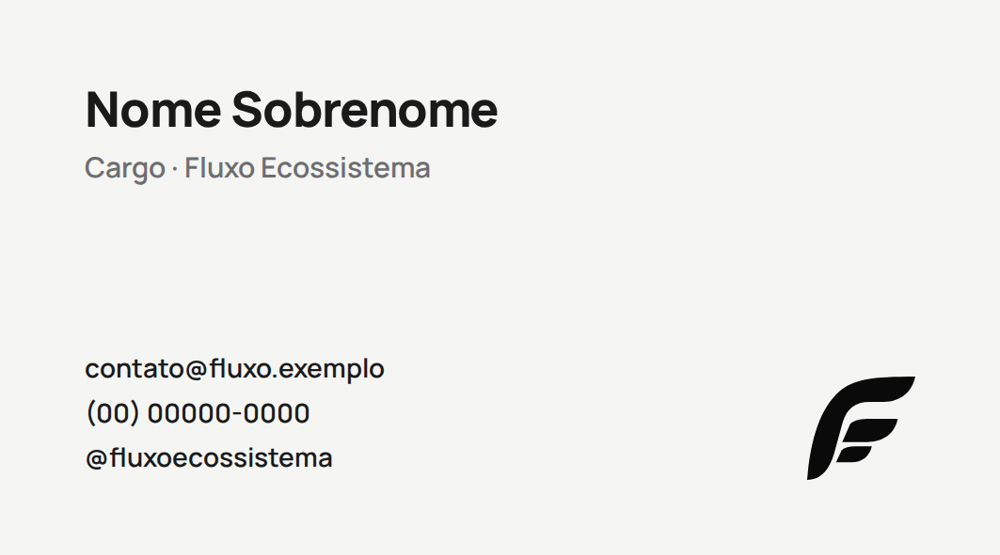
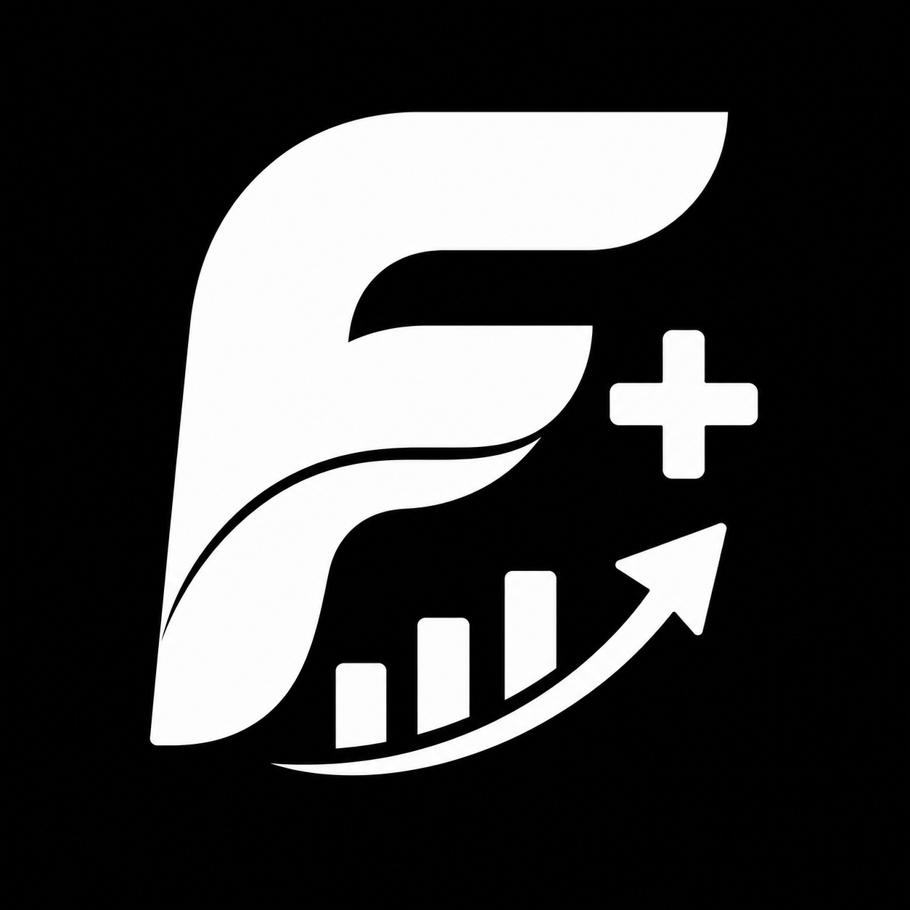

Manual da marcav1.0 · 2026

Tecnologia que organiza, com você no controle.
Identidade visual do ecossistema Fluxo e dos produtos Fluxo+ e FluxoCheck.
Tecnologia que organiza, com você no controle.
Identidade visual do ecossistema Fluxo e dos produtos Fluxo+ e FluxoCheck.
Dar às pessoas e às equipes ferramentas simples para colocar a vida e o trabalho em ordem — sem abrir mão do controle sobre os próprios dados.
Um ecossistema de apps que transformam rotinas bagunçadas em fluxos claros: as finanças da casa (Fluxo+) e a operação da loja (FluxoCheck).
Simples de usar, funcionando até sem internet, com privacidade por padrão e sem letra miúda: prometemos só o que entregamos.
Fala simples. Uma ideia por vez.
Promete só o que entrega.
Trata por "você", sem julgamento.
Resolve o problema do dia a dia.
Personalidade da marca


próximo produto
Marca endossada: cada app mantém a logo original dele. A ligação com a empresa vem da assinatura um produto fluxo, usada em peças de divulgação, telas "sobre" e materiais comerciais. O símbolo da Fluxo nunca substitui a logo de um app.
O símbolo nasce do que os apps têm em comum: o F feito de lâminas em forma de folha — ponta afiada, lado arredondado — separadas por um corte curvo, como no Fluxo+ e no FluxoCheck.
A lâmina maior é a raiz: a Fluxo. As duas menores crescem dela, uma para cada produto. O desenho diz "ecossistema" sem precisar de palavra — e continua verdadeiro quando surgir o próximo app.
Todas as lâminas têm a mesma inclinação de 8°: o movimento do fluxo, para a frente e para cima.
 →
→

De onde vem: as logos dos apps → o símbolo da empresa


Horizontal
mín. 24 mm · 96 px de largura
Símbolo
mín. 7 mm · 20 px de altura (as lâminas menores precisam de espaço)

Endosso
mín. 3 mm de altura · 12 px
Proporção: ~70% grafite, ~20% neutros, ~10% lima. A lima é destaque, não fundo — exceto em peças de chamada.
Sobre fundo claro, texto de destaque usa Lima escuro (#4A7010), que tem contraste de leitura; a lima pura some no branco.
Apoio funcional: âmbar #F2B84B (atenção) e vermelho #FF5C5C (erro/despesa) só em interfaces e dados, nunca na marca.
Fonte livre (SIL Open Font License), geométrica e legível em telas pequenas. É a mesma dos apps e do logotipo.
ABCDEFGHIJKLMNOPQRSTUVWXYZ
abcdefghijklmnopqrstuvwxyz 0123456789 R$ %
ExtraBold 800 · espaçamento −3%
Bold 700 · etiquetas em CAIXA ALTA +12%
Medium 500 · entrelinha 1,4–1,6
FluxoFluxoCheck






Arquivos editáveis em marketing/marca/fonte/templates.html · PNGs em marketing/marca/templates/
B2C (Fluxo+): leve, próximo, com humor ocasional. B2B (FluxoCheck): mesmo jeito simples, mas objetivo — fala de tempo, conformidade e evidência.